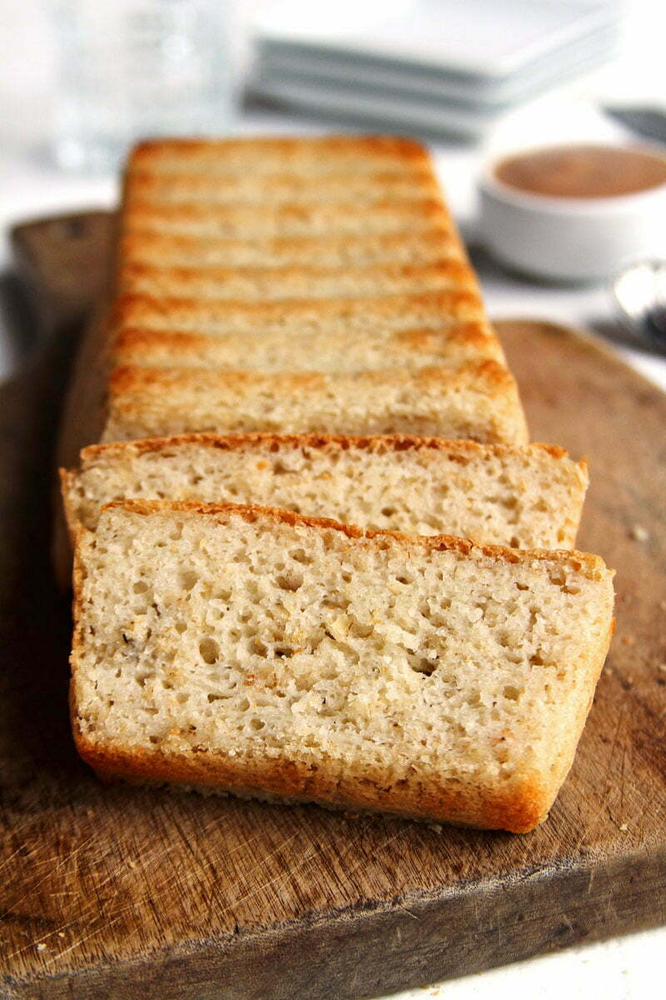
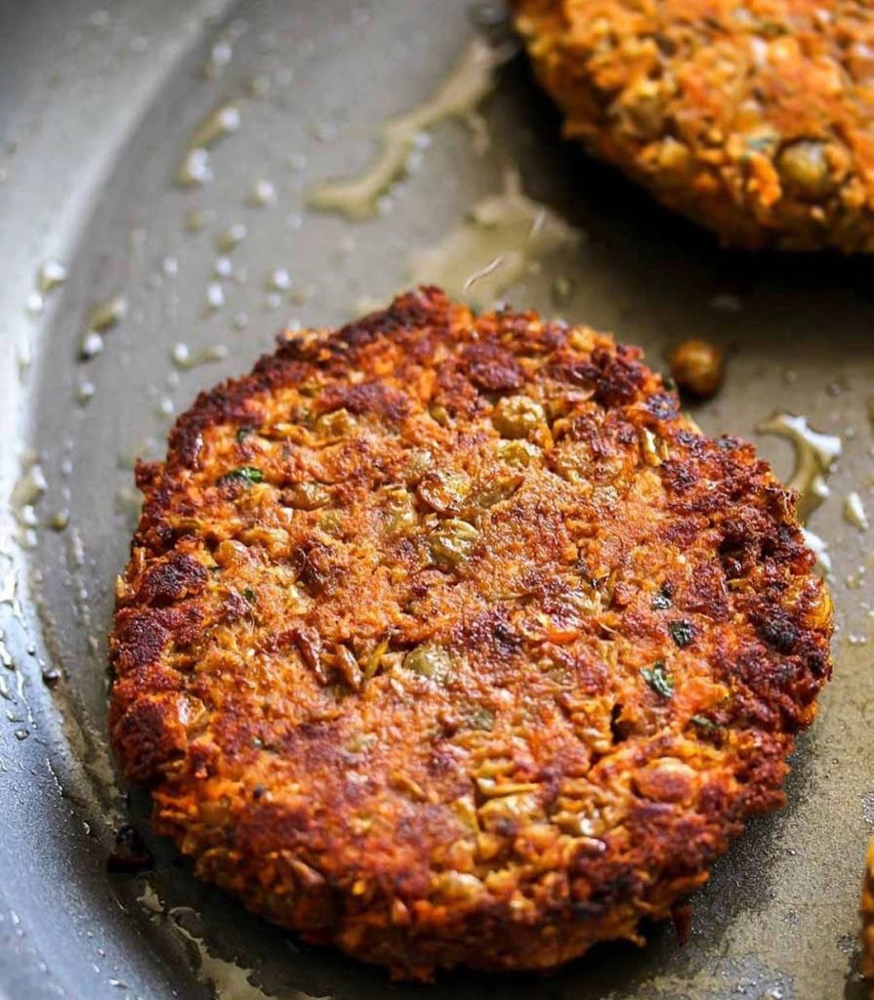

Risoto
Utilize essa receita como base para criar dezenas de outras variações de risotos, desde os mais tradicionais até os mais exóticos

Pão vegano sem glúten
Nossa principal dica é substituir parte da farinha de trigo comum de sua receita pela nossa farinha especial, tornando-o muito mais saudável
